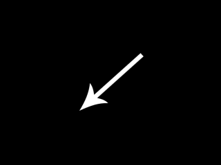
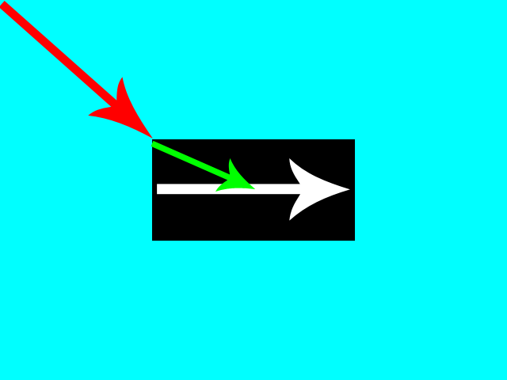
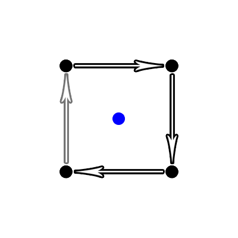

Rotation

Last Updated 8/09/12
We're not actually going to rotate the texture in this tutorial. We're going to rotate the quad it's attached to.From LTexture.cpp
void LTexture::render( GLfloat x, GLfloat y, LFRect* clip, LFRect* stretch, GLfloat degrees )
{
//If the texture exists
if( mTextureID != 0 )
{
//Remove any previous transformations
glLoadIdentity();
//Texture coordinates
GLfloat texTop = 0.f;
GLfloat texBottom = (GLfloat)mImageHeight / (GLfloat)mTextureHeight;
GLfloat texLeft = 0.f;
GLfloat texRight = (GLfloat)mImageWidth / (GLfloat)mTextureWidth;
//Vertex coordinates
GLfloat quadWidth = mImageWidth;
GLfloat quadHeight = mImageHeight;
//Handle clipping
if( clip != NULL )
{
//Texture coordinates
texLeft = clip->x / mTextureWidth;
texRight = ( clip->x + clip->w ) / mTextureWidth;
texTop = clip->y / mTextureHeight;
texBottom = ( clip->y + clip->h ) / mTextureHeight;
//Vertex coordinates
quadWidth = clip->w;
quadHeight = clip->h;
}
//Handle Stretching
if( stretch != NULL )
{
quadWidth = stretch->w;
quadHeight = stretch->h;
}
The LTexture render() function now takes in another argument which specifies how many degrees you want to rotate your quad.
The first part of our rendering function is largely the same in terms of texture and vertex points.
The first part of our rendering function is largely the same in terms of texture and vertex points.
From LTexture.cpp
//Move to rendering point
glTranslatef( x + quadWidth / 2.f, y + quadHeight / 2.f, 0.f );
//Rotate around rendering point
glRotatef( degrees, 0.f, 0.f, 1.f );
In this tutorial, we want to rotate the image around its center. We'll rotate the quad using glRotate(), but before we do that we want our rotation point to be the center of the
image.
The function glRotate() will rotate around the current point of translation. In the above code, we translate to the center of the image by adding the given offset plus half the span of the quad so our total translation looks like this:
Then after that we rotate the quad using glRotate(). The first argument is how many degrees you want to rotate. The next three arguments are the x/y/z components of the vector you want to rotate around. Here we're rotating around the positive z axis (which is a vector going out of the screen and towards you). glRotate() expects a normalized vector, but it should normalize any vector you give it.
The function glRotate() will rotate around the current point of translation. In the above code, we translate to the center of the image by adding the given offset plus half the span of the quad so our total translation looks like this:

Then after that we rotate the quad using glRotate(). The first argument is how many degrees you want to rotate. The next three arguments are the x/y/z components of the vector you want to rotate around. Here we're rotating around the positive z axis (which is a vector going out of the screen and towards you). glRotate() expects a normalized vector, but it should normalize any vector you give it.
From LTexture.cpp
//Set texture ID
glBindTexture( GL_TEXTURE_2D, mTextureID );
//Render textured quad
glBegin( GL_QUADS );
glTexCoord2f( texLeft, texTop ); glVertex2f( -quadWidth / 2.f, -quadHeight / 2.f );
glTexCoord2f( texRight, texTop ); glVertex2f( quadWidth / 2.f, -quadHeight / 2.f );
glTexCoord2f( texRight, texBottom ); glVertex2f( quadWidth / 2.f, quadHeight / 2.f );
glTexCoord2f( texLeft, texBottom ); glVertex2f( -quadWidth / 2.f, quadHeight / 2.f );
glEnd();
}
}
Since we're rendering our textured quad with the origin at the center, we're going to have our vertex data sent like this:
Notice how our texture coordinates are the same. Remember that the only thing we're rotating here is the vertices the texture is getting mapped to.

Notice how our texture coordinates are the same. Remember that the only thing we're rotating here is the vertices the texture is getting mapped to.
From LUtil.cpp
bool loadMedia()
{
//Load texture
if( !gRotatingTexture.loadTextureFromFile( "12_rotation/arrow.png" ) )
{
printf( "Unable to load arrow texture!\n" );
return false;
}
return true;
}
Our loadMedia() function loads our texture as usual.
From LUtil.cpp
void update()
{
//Rotate
gAngle += 360.f / SCREEN_FPS;
//Cap angle
if( gAngle > 360.f )
{
gAngle -= 360.f;
}
}
Now our update() function actually does something!
In this tutorial we want the image to rotate every second. So we add to the angle of rotation 360 degrees / the number of frames per second.
Because our angle value can't go on forever, we cap the value between 0 and 360.
In this tutorial we want the image to rotate every second. So we add to the angle of rotation 360 degrees / the number of frames per second.
Because our angle value can't go on forever, we cap the value between 0 and 360.
From LUtil.cpp
void render()
{
//Clear color buffer
glClear( GL_COLOR_BUFFER_BIT );
//Render arrow
gRotatingTexture.render( ( SCREEN_WIDTH - gRotatingTexture.imageWidth() ) / 2.f, ( SCREEN_HEIGHT - gRotatingTexture.imageHeight() ) / 2.f, NULL, NULL, gAngle );
//Update screen
glutSwapBuffers();
}
Lastly in our render() function we render our rotated texture.
You may be wondering why we didn't do the rotation calculation in render(). In a proper game loop rendering should not update any objects, just render them as they currently are. If you never call update(), render() should always render the same thing.
You may be wondering why we didn't do the rotation calculation in render(). In a proper game loop rendering should not update any objects, just render them as they currently are. If you never call update(), render() should always render the same thing.